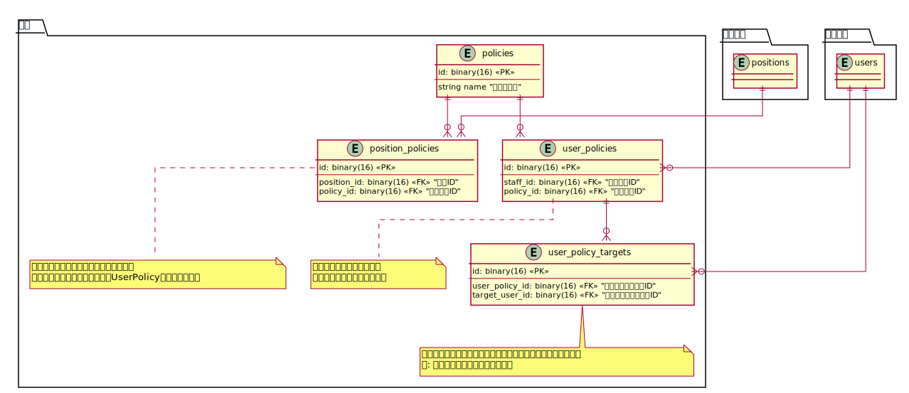
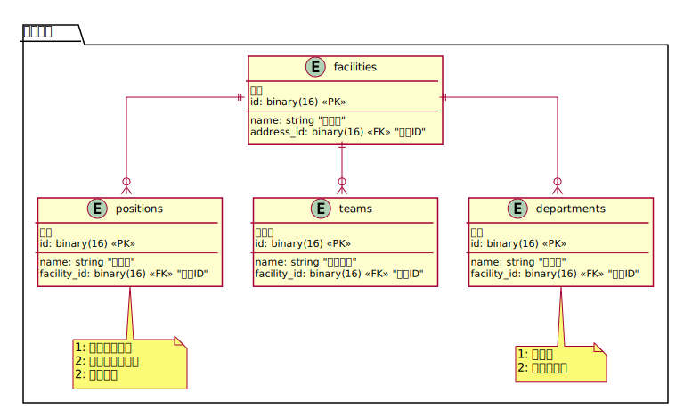
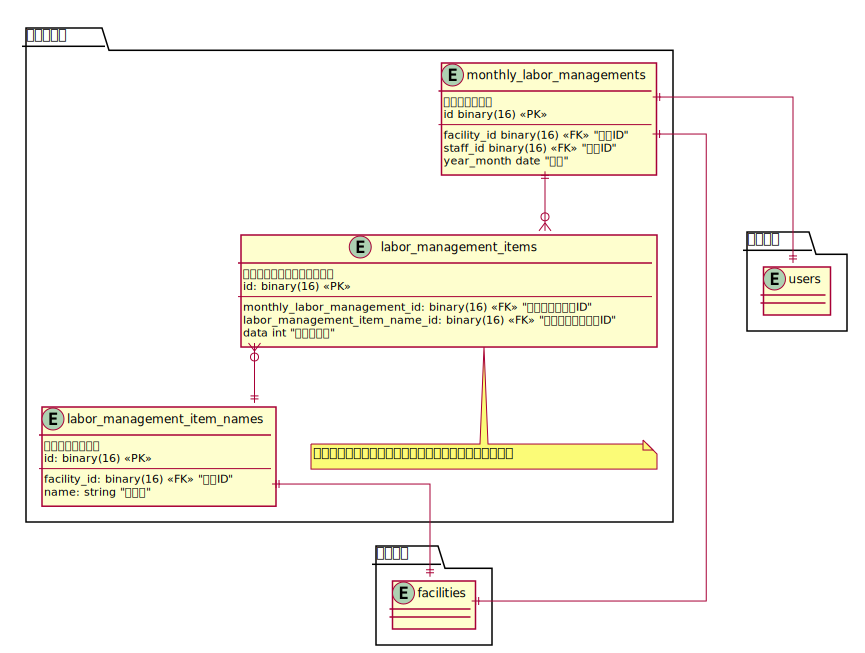
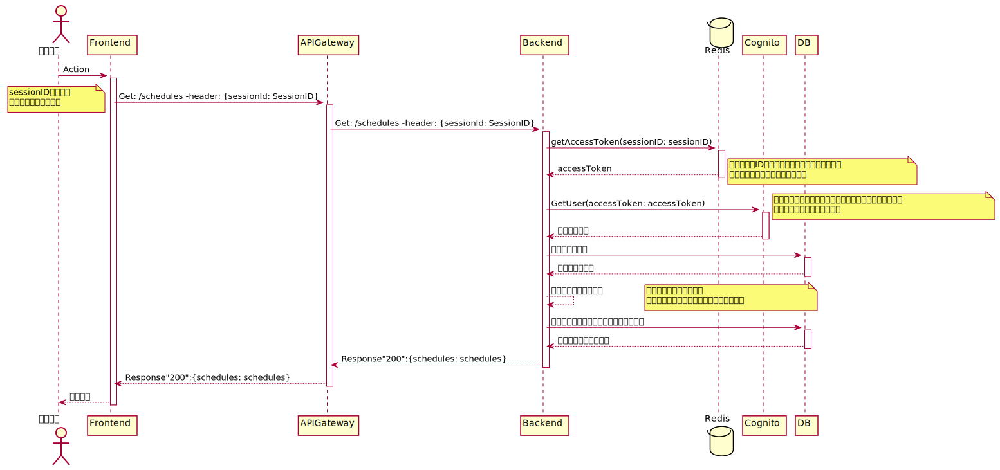

全体

テーブル詳細
スタッフ

予定

患者

権限
施設
住所・エリア

経営情報
インフラ構成
S3
SPA コンテンツをホスティング。
CloudFront
S3 に格納されている SPA コンテンツをキャッシュし、ユーザーに近いエッジロケーションから配信。 Certificate Manager から取得した SSL 証明書を利用し、HTTPS による通信を行う。
APIGateway・Lambda・Cognito・NLB
クライアントのリクエストを受け取り、VPCLink と NLB を介してプライベートサブネットに配置している API サーバーへルーティングを行う リクエスト毎に Lambda オーソライザーを利用し、ユーザーの認証を行う。 ユーザー管理には Cognito を利用する。
AZ・Subnet
下記の点からシングル AZ で構築している
- ユーザーが 1 施設あたり 100 人程度
- プロトタイプであること
APIServer・DB ともに PrivateSubnet で管理し、インターネットからのアクセスを制限する（APIGateway・VPCLink・NLB を介してリソースへアクセスできるように）
ECS・Fargate・ECR
Go + Gin で作成した API サーバーを管理
RDS
アプリ内で利用するデータを管理する
ElasticCache
Cognito から取得した Token を SessionID と紐づけて管理する。
機能一覧
- 予定管理
- スタッフの管理
- 患者情報の管理
- 認証
- 権限管理
- 経営情報の管理
備考
認証認可・ユーザー管理
ユーザーは Cognito 側とアプリ側の双方で管理する
認証認可
認証は Cognito で行い、認可は Backen で行う
認可では、ユーザーの権限を確認する
権限情報
認証
ユーザーの認証は Cognito を利用
受け取った Token をクライアントで保存する
ユーザーが権限付きの API を発行する場合、Cognito 側で Token の検証を行う。
→ 成功した場合 Backend 側で認可処理を行う

認可
リクエストからユーザー情報を受け取り、ユーザーの権限を確認して実行可否を判定する
新規ユーザー登録
- クライアントから必要なデータを受け取る
- CognitoUser を登録する
- 登録した User を取得して Sub（UUID）を取得
- UUID + 登録した UserId を元にアプリ DB に登録
権限情報
PBAC（ポリシーベースアクセスコントロール）を採用する
- n 個のポリシーが存在する
- 各ユーザーは複数のポリシーを持っており、ポリシーに応じて実行できる API を制御する
新規登録時
- 役職に応じて、それぞれが権限を持つようにする 新規登録時は、スタッフの役職に応じて権限が割り振られるようにする
権限一覧
- 自分のカレンダーの編集
- 指定した職員のカレンダーの閲覧
- 指定した職員のカレンダーの編集
- 指定したチームに所属しているチームメンバーのカレンダーの閲覧
- 指定したチームに所属しているチームメンバーのカレンダーの編集
- 全てのカレンダーの閲覧
- 全てのカレンダーの編集
ユーザー管理
DB が消えたとしても、Cognito に存在するユーザーは消えない。
そのため、Cognito に登録されたユーザー情報を元に DB に復元する処理が必要となる
施設情報
各施設(Facilities)ごとに、部署(Departments)・役職(Positions)・チーム(Teams)をそれぞれ付与する。 （下記クリオさんの場合）
部署(Departments)
- 看護部
- リハビリ部
役職(Position)
- マネージャー
- チームリーダー
- メンバー
チーム(Teams)
(クリオさんに聞く)
他の施設で部署や役職が異なる場合
現状だと、施設毎に部署や役職が作られ、割り当てられるような設計となっている ただ、他の施設でも看護・リハビリなど共通のものは多いと思う それならば、部署と施設を n : n の関係にし複数の施設で共有する方が良いのではないかと考える 、
備考
管理する経営数値
施設データ（施設全体で管理する情報）
項目
- 予定と実績の差
- キャンセル率
- 業務割合（訪問・移動・会議/その他）
職員（職員毎に管理する情報）

項目
- 月の稼働時間合計
画面一覧
| 画面名 | Path | 閲覧権限 |
|---|---|---|
| ログイン | /login | all |
| カレンダー | /schedule | all(※1) |
| 患者一覧 | /patient | all |
| 患者登録 | /patient/new | manager |
| 患者登録内容確認 | /patient/new/confirm | manager |
| 患者情報編集 | /patient/:patientId/edit | manager |
| 患者情編集確認 | /patient/:patientId/edit/confirm | manager |
| 職員一覧 | /staff | manager, reader |
| 職員詳細 | /staff/:staffId | manager, reader |
| 職員登録 | /staff/new | manager |
| 職員登録内容確認 | /staff/new/confirm | manager |
| 職員情報編集 | /staff/edit | manager |
| 職員情報編集内容確認 | /staff/edit/confirm | manager |
| プロフィール | /profile | all |
| パスワード更新 | /profile/password/update | all |
※1. カレンダーは権限によって、他のスタッフの予定を表示するかを決める
※2. 予定編集はメンバーは個人の予定しか編集することができない
画面遷移図
カレンダー画面
API
| エンドポイント | メソッド | 説明 |
|---|---|---|
| /schedules | GET | 権限に応じた予定の一覧を取得する |
| /users | GET | 権限に応じた職員の一覧を取得する |
アクション
| 対象項目名 | トリガー | アクション概要 |
|---|---|---|
| 空白の予定セル | クリック | 予定登録モーダルを開く |
| 入力済みの予定せる | クリック | 予定詳細モーダルを開く |
| チェックボックス（全体） | クリック | 全ての予定を表示(非表示) 全てのチェックボックスを ON(OFF) する |
| チェックボックス（自分） | クリック | ログインユーザーの予定を表 |
| チェックボックス（チーム） | クリック | チームメンバーのチェックボックスを ON(OFF)する |
備考
- 初期状態では、全てのチェックボックスを ON にする
予定詳細（モーダル）
訪問予定
通常予定
API
| エンドポイント | メソッド | 説明 |
|---|---|---|
| /schedules/:schedule_id | GET | スケジュール ID に紐づいた予定情報を取得する |
アクション
| 対象項目名 | トリガー | アクション概要 |
|---|---|---|
| 「編集」ボタン | クリック | 予定編集モーダルを表示する |
| 「患者名」 | クリック | 「患者詳細」へ遷移する |
備考
- 予定の種類（通常・訪問）に応じて表示するモーダルを切り替える
患者一覧
API
| エンドポイント | メソッド | 説明 |
|---|---|---|
| /patients | GET | 患者一覧を取得する |
アクション
| 対象項目名 | トリガー | アクション概要 |
|---|---|---|
| テーブルヘッダー | クリック | 要素を並び替える (昇順/降順/通)常 |
| ボタン（新規登録） | クリック | 患者登録画面へ遷移する |
| 検索バー | 入力 | 患者名で filter をかける |
| テーブルデータ | クリック | 患者詳細を開く（横展開） |
| ボタン（編集） | クリック | 患者編集画面に遷移する |